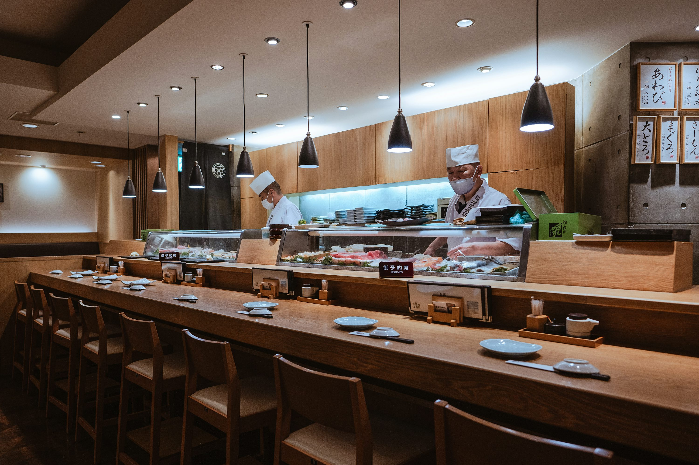
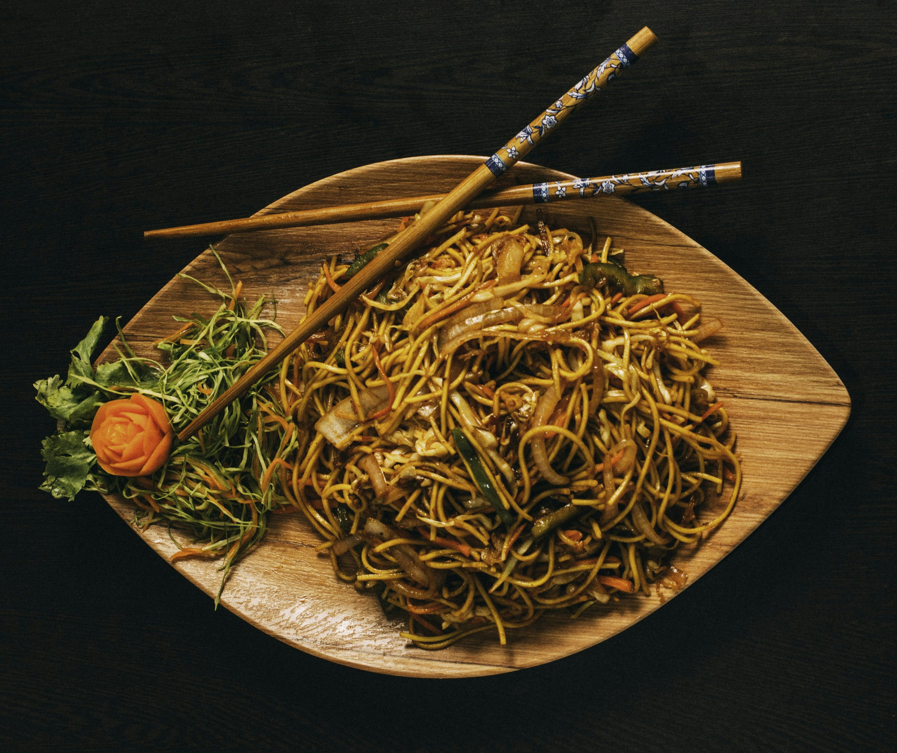
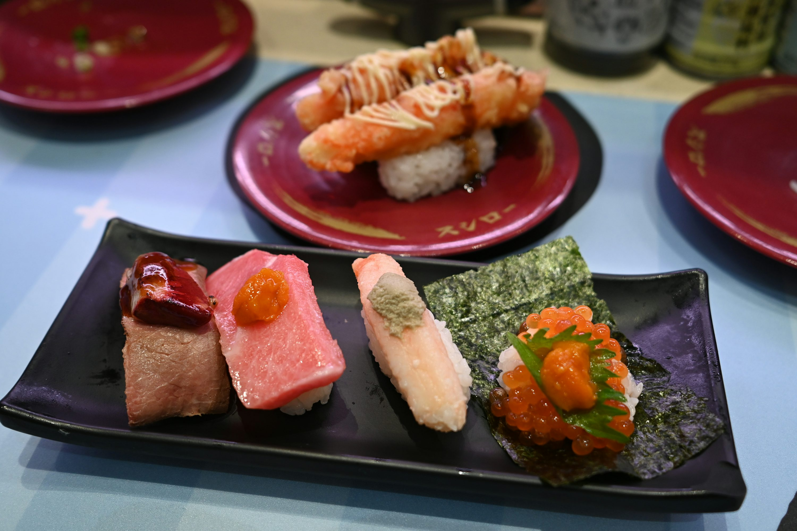

Descubra o quinto sabor em uma jornada gastronômica pelo melhor da culinária oriental em Marília.
Reservar MesaA Barbado & Barbado Restaurante Asiático Ltda, sob a marca Umami Cozinha Asiática, nasceu da paixão pela complexidade e harmonia dos sabores orientais. Nossa cozinha é um tributo à tradição, executada com técnicas contemporâneas.
Cada prato é uma composição cuidadosa de texturas e aromas, projetada para proporcionar uma experiência sensorial completa e inesquecível.


Pratos clássicos reinterpretados com ingredientes selecionados e um toque de modernidade.

A busca constante pelo equilíbrio perfeito entre o doce, salgado, azedo e amargo.